UT 4 - Presentaciones
Resultados de aprendizaje y criterios de evaluacion que se evaluarán en esta unidad.
| Resultados de aprendizaje de la unidad didáctica: |
|---|
| RA7. Elabora presentaciones multimedia describiendo y aplicando normas básicas de composición y diseño. |
| Criterios de evaluación de la unidad didáctica: | |
|---|---|
| a) Se han identificado las opciones básicas de las aplicaciones de presentaciones. | 20% |
| b) Se han reconocido los distintos tipos de vista asociados a una presentación. | 5% |
| c) Se han aplicado y reconocido las distintas tipografías y normas básicas de composición, diseño y utilización del color. | 20% |
| d) Se han diseñado plantillas de presentaciones. | 20% |
| e) Se han creado presentaciones. | 30% |
| f) Se han utilizado periféricos para ejecutar presentaciones. | 5% |
Nota:
El criterio de evaluación f) Se han utilizado periféricos para ejecutar presentaciones será evaluado durante la FCT.
Presentación
LibreOffice Impress es el componente del paquete ofimático LibreOffice que sirve para crear presentaciones multimedia.
Su función principal es ofrecer una herramienta completa para diseñar y organizar información visualmente atractiva, ideal para comunicarla a una audiencia.
Usos típicos de LibreOffice Impress
| Función | Descripción |
|---|---|
| Creación de Diapositivas | Permite diseñar páginas individuales (diapositivas) utilizando plantillas, diseños predefinidos o desde cero. |
| Integración Multimedia | Permite insertar y manipular diversos tipos de contenido: texto, imágenes, gráficos, audio, vídeo y objetos OLE (como hojas de cálculo o gráficos de otras aplicaciones). |
| Efectos Visuales | Ofrece herramientas para aplicar transiciones entre diapositivas y animaciones a objetos individuales (cómo aparece un texto o una imagen dentro de una diapositiva). |
| Estructuración del Contenido | Herramientas de vista (Clasificador de Diapositivas, Esquema) que facilitan organizar y ordenar el flujo de la información. |
| Presentación en Vivo | Permite proyectar la presentación en pantalla completa pero también con una Vista del Presentador que muestra las notas privadas y el tiempo transcurrido en un monitor separado. |
| Exportación a multiples formatos | Puede guardar presentaciones en formato nativo (.odp), en el formato de Microsoft PowerPoint (.pptx o .ppt), y también exportar a formatos como PDF y HTML o vídeo. |
1 - Interfaz de trabajo en impress
Después de hacer doble clic sobre el icono de LibreOffice seleccionamos Nuevo → presentación y nos encontraremos con la siguiente interfaz.
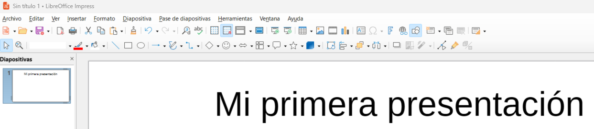
1.1 - Menú: Archivo
Permite la creación de archivos de presentaciones y su posterior guardado, firmado digital o impresión, etc.
1.2 - Menú: Editar
Aparte del conocido “copiar pegar” también permite buscar, editar dispositivas...
1.3 - Menú: Ver
El menú "Ver" sirve para controlar cómo se muestra el documento en pantalla y qué elementos visuales de la interfaz deseamos ver u ocultar.
1.4 - Menú: Insertar
Ofrece opciones para incluir objetos en nuestro documento: fotografías, dibujos, tablas, ecuaciones matemáticas o incluso otros archivos.
1.5 - Menú: Formato
Es, una de las ventanas que más se utilizará ya que, permite dar formato a los elementos que incorporaremos a las diapositivas.
1.6 - Menú: Diapositiva
Se puede considerar como el centro de control para administrar y estructurar una presentación, enfocándose en la creación, orden y propiedades de las diapositivas individuales.
1.7 - Menú: Pase de diapositivas
Probablemente el menú más importante de LibreOffice Impress, sirve para ejecutar y configurar la presentación. Su objetivo principal es controlar cómo se ve y se comporta la presentación durante la exposición.
1.8 - Menú: Herramientas
Es el menú Herramientas se encuentran las funciones de utilidad, la configuración avanzada, las opciones de corrección de texto y las herramientas de automatización.
1.9 - Menú: Ventana
El menú "Ventana" está pensado para gestionar las distintas ventanas o instancias del programa abiertas en ese momento. No afecta al contenido del documento, sino a cómo se interactúa con varios documentos o vistas al mismo tiempo.
1.10 - Menú: Ayuda
Reúne todas las opciones para obtener asistencia, acceder a la documentación oficial y consultar información sobre la instalación de LibreOffice.
Tarea RA7-CEa - Manejo básico de Impress
Tarea RA3-CEa
PARTE 1 - Creación de diapositivas
- A través de una presentación con diapositivas se desea exponer las principales características de Impress.
- Abrir una nueva presentación en blanco, y desde la barra lateral, elegir un patrón para elaborar las siguientes diapositivas.
- También podeís hacer uso de la función disposición de diapositiva para que el asistente proponga varias disposiciones posibles.
Contenidos diapositiva 1
1 - Presentaciones en LibreOffice Impress
- Introducción
- Características generales de la aplicación.
Contenidos diapositiva 2
2 - Instalación de la Aplicación
- Requerimientos
- Componentes
Contenidos diapositiva 3
3 - Diseño de Presentaciones Electrónicas
- Diapositivas animadas.
- Presentaciones interactivas.
- Intervalos y transiciones.
Contenidos diapositiva 4
4 - Ejecución de una presentación electrónica
- Formas de ejecutar una presentación con diapositivas.
- Realizada por un orador (pantalla completa).
- Examinada de forma individual (ventana).
- Examinada en exposición (pantalla completa).
Contenidos diapositiva 5
5 - Presentaciones automáticas
- Intervalos automáticos o manuales.
- Hipervínculos.
PARTE 2 - Fondos y fuentes
- Consejo → Mostrar reglas.
- Consejo → Mostrar retículas.
- Consejo → Propiedades → Formato diapositiva.
- Consejo → Propiedades → Disposiciones.
- Tarea → Patrones de diapositivas → Elegir un patrón para diapositivas 1, 2 y 3.
- Tarea → Patrones de diapositivas → Elegir un fondo (color, degradado...) para diapositiva 4.
- Tarea → Patrones de diapositivas → Elegir una imagen (www.pixabay.com , ...) para el fondo de la diapositiva 5.
- Tarea → Ajustar posición, tamaños, colores de fuentes para cada diapositiva.
PARTE 3 - Insertar y retocar imágenes
- Descargar la siguiente imagen: Descargar archivo
- Descargar la siguiente imagen: Descargar archivo
- Tarea → Insertar imagenes en todas las diapositivas. Ajustar tamaño, rotación, modo de color, brillo, contraste y transparencia al gusto.
- Tarea → Insertar imagenes en todas las diapositivas. Ubicarlas de tal manera que no haya sensación de movimiento al pasar las diapositivas.
- Descargar la siguiente imagen: Descargar archivo
- Tarea → Duplicar la diapositiva 2 y dejarla en la posición 3. Insertar la imagen descargada, aplicarle un borde y recortarla al gusto.
{kind=link}
{kind=link}
{kind=link}
PARTE 4 - Insertar tabla
- Tarea → Añadir una diapositiva a la presentación. Poner un fondo, título con los datos que se dan a continuación.
-
Tarea → Insertar una tabla con los siguientes datos:
Consumo eléctrico anual (GWh) por sector y fuente de energía.
Electricidad Gas natural Renovables Residencial 120 95 60 Industrial 210 180 90 Servicios 160 110 75 Transporte 90 140 45
PARTE 5 - Insertar gráfico
- Tarea → Añadir una diapositiva a la presentación. Poner un fondo, título con los datos que se dan a continuación.
- Tarea → Insertar un gráfico → Columna en pilas, 3D, realista, forma: cilindro.
- Tarea → Modificar la gráfica utilizando los datos de la tabla anterior.
- Ejemplo de resultado:
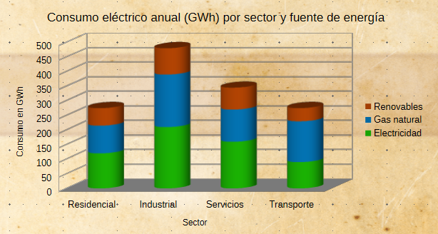
PARTE 6 - Insertar formas
- Tarea → Añadir una diapositiva a la presentación. Poner un fondo y un título.
- Tarea → Insertar formas para obtener un resultado similar al de la imagen.
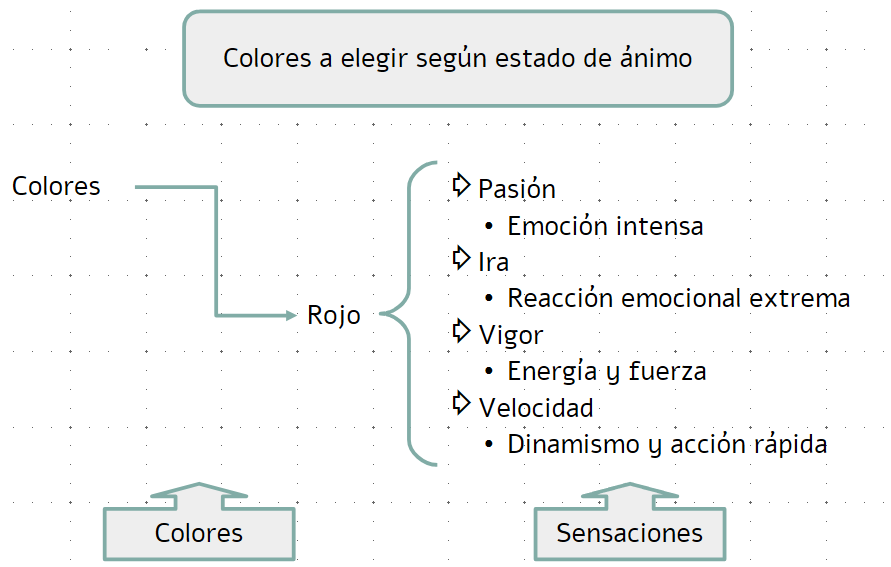
PARTE 7 - Fontwork
- Tarea → Añadir una diapositiva a la presentación. Poner un fondo y un título.
- Tarea → Insertar texto usando fontwork.
- Ejemplo de resultado:
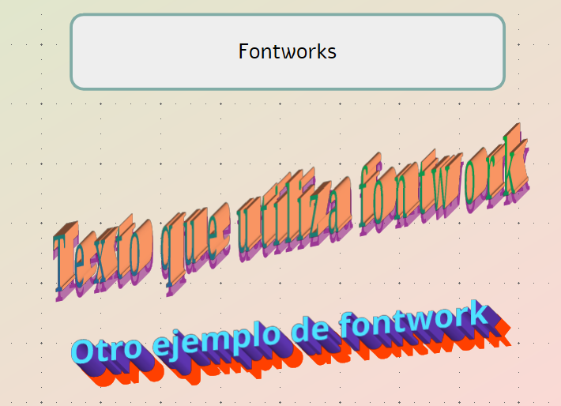
PARTE 8 - Alinear objetos
- Tarea → Añadir una diapositiva a la presentación. Poner un fondo y un título.
- Replicar la imagen de aquí abajo. No se trata de calcar el ejemplo sino de prestar atención a la alineación y la separación entre objetos.
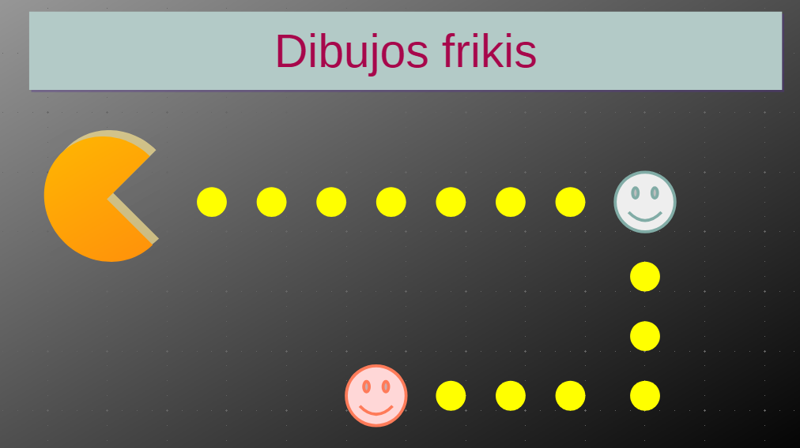
PARTE 9 - Transiciones entre diapositivas
- Las transiciones son los efectos visuales que se aplican al pasar de una diapositiva a otra durante una presentación. Sirven para hacer que el cambio sea más atractivo y dinámico.
- Tarea: Ir a Diapositiva → Transición entre diapositivas y aplicar un efecto durante la transición a todas las diapositivas del documento (observar como también se pueden personalizar esos efectos).
PARTE 10 - Animaciones
Los efectos de animación pueden clasificarse en 4 categorias:
- Entrada: cuando el elemento aparece por pantalla. Agrega un efecto que introduce el texto o el objeto en la presentación con diapositivas.
- Salida: cuando el elemento desaparece de la pantalla. Agrega un efecto que saca el texto o el objeto de la diapositiva en algún momento.
- Énfasis: cambio de un elemento para resaltarlo. Agrega un efecto al texto o al objeto para lograr que resalte mucho más.
- Rutas de movimiento: cambio de posición de un elemento para resaltarlo. Agregar un efecto que mueve un objeto en la trama especificada.
Tarea
- Añadir una diapositiva a la presentación.
-
Realizar un diseño similar al de la imagen.
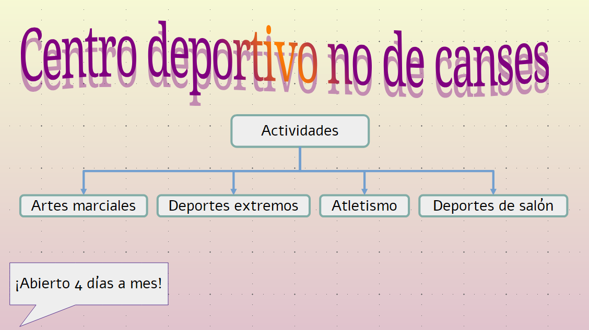
-
Animar los elementos de la diapositiva para obtener un resultado similar al siguiente ejemplo.
Visualizar ejemplo.
PARTE 11 - Navegación, enlaces, cabeceras y pie de página
- Añadir en todas las hojas 2 campos donde aparecerá vuestro nombre, la diapositiva actual y el recuento de diapositivas.
- Añadir un botón que permitirá volver al inicio de la presentación.
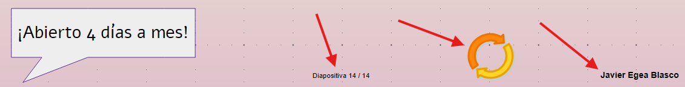
Entrega de la tarea
Subir la tarea a AULES en el apartado correspondiente.
El archivo a subir deberá ser de tipo .odp (formato predeterminado de LibreOffice Impress).
No se aceptará ningún otro formato de archivo.
2 - Vistas de una presentación
Saber manejar los distintos tipos de vista de una presentación es importante, ya que permiten obtener tanto una visión detallada de una diapositiva como una visión global del conjunto. LibreOffice impress ofrece 7 tipos de vistas diferentes:
- Vista normal
- Vista esquema
- Vista notas
- Vista clasificador de diapositivas
- Vista patrón de diapositivas
- Vista patrón de notas
- Vista patrón de folleto
Se puede acceder a esas vistas desde el menú ver.
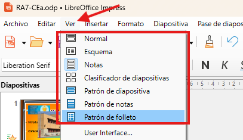
2.1 - Vista normal
La vista normal es la que se utiliza habitualmente. En ella se diseña y modifica la diapositiva sobre la que se está trabajando.
2.2 - Vista esquema
La vista esquema se centra en los contenidos de la diapositiva, sin tener en cuenta los aspectos visuales. Muestra un listado de las diapositivas con el esquema de sus textos. Desde esta vista se obtiene una visión rápida de los contenidos de toda la presentación, lo que permite revisarlos y actualizarlos si resulta necesario.
2.3 - Vista notas
En la vista notas, la pantalla se divide en dos partes: la parte superior, donde se visualiza la diapositiva, y la parte inferior, que contiene un cuadro de texto para añadir notas y comentarios asociados a dicha diapositiva.
2.4 - Vista clasificador de diapositivas
La vista clasificador de diapositivas permite visualizar rápidamente el conjunto de todas las diapositivas y comprobar la coherencia entre ellas. Además, permite cambiar el orden de la presentación arrastrando las diapositivas con el ratón.
2.5 - Vista patrón de diapositivas
La vista patrón de diapositivas permite definir el diseño general que se aplicará a todas las diapositivas de la presentación. Desde esta vista se pueden modificar elementos comunes como el fondo, las fuentes, los colores, los logotipos o la posición de los distintos objetos, asegurando así una apariencia uniforme en toda la presentación.
2.6 - Vista patrón de notas
La vista patrón de notas permite personalizar el formato de las páginas de notas que acompañan a las diapositivas. En esta vista se pueden ajustar elementos como encabezados, pies de página, fuentes y disposición de los contenidos, de forma que las notas impresas o visualizadas mantengan un diseño coherente.
2.7 - Vista patrón de diapositivas
La vista patrón de folleto se utiliza para configurar el diseño de los folletos que se generan al imprimir la presentación. Desde esta vista se puede establecer la distribución de las diapositivas en cada página, así como definir elementos comunes como encabezados, pies de página, numeración o textos adicionales, facilitando la creación de material impreso para los asistentes.
2.8 - Tarea RA7-CEb
Creación de patrones de diapositivas.
Parte 1
Crear una presentación en blanco y guardarla con el formato: tarea RA7-CEb nombre apellidos. Descargar el archivo de imágenes pinchando en este enlace
Parte 2
Ir a → patrón de dispositivas y crear 4 patrones de diapositivas.
Cambiar el nombre de los patrones a Portada, Castellón, Valencia y Alicante.
Parte 3 - Patrón Portada
Editar el patrón para dejarlo como en la siguiente imagen.
Trabajos a realizar:
- Insertar imagen de fondo, poner a escala de la diapositiva, pasar a escala de grises, aplicar una transparencia (para no afectar a la legibilidad del texto) y enviar al fondo.
- Redistribuir los esquemas de texto (no se pueden suprimir).
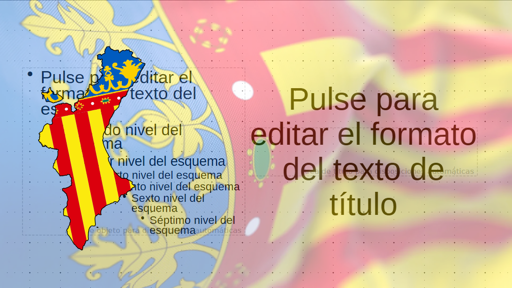
Parte 4 - Patrón Valencia
Editar el patrón para dejarlo como en la siguiente imagen. Trabajos a realizar:
- Poner un rectángulo en la parte superior con el color típico de la provincia.
- Editar el esquema de numeración para sustituir el simbolo del bolo por la bandera de la provincia.
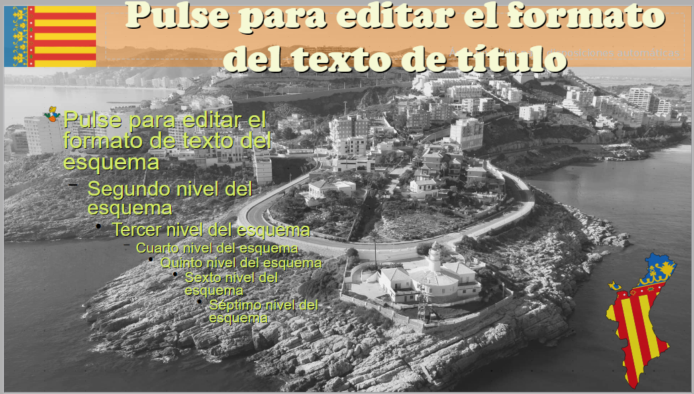
Parte 5 - Patrón Castellón
Repetir los pasos de la parte 4 cambiando la imagen de fondo, la bandera de la provincia, etc.
Parte 6 - Patrón Alicante
Repetir los pasos de la parte 4 cambiando la imagen de fondo, la bandera de la provincia, etc.
Entrega de la tarea
Subir la tarea a AULES en el apartado correspondiente.
El archivo a subir deberá ser de tipo .odp (formato predeterminado de LibreOffice Impress).
No se aceptará ningún otro formato de archivo.
2.9 - Tarea RA7-CEd
Creación de plantillas de presentaciones.
Creación de una plantilla de presentaciones
Guardar la presentación de la tarea RA7-CEb en formato plantilla (*.otp).
El nombre de la plantilla será: tarea RA7-CEd nombre apellidos.
Entrega de la tarea
Subir la tarea a AULES en el apartado correspondiente.
El archivo a subir deberá ser de tipo .otp (formato predeterminado de LibreOffice Impress).
No se aceptará ningún otro formato de archivo.
3 - Diseño amigable de una presentación
El diseño amigable de una presentación es aquel que se enfoca en la experiencia de la audiencia, priorizando la claridad, la legibilidad y la facilidad de comprensión.
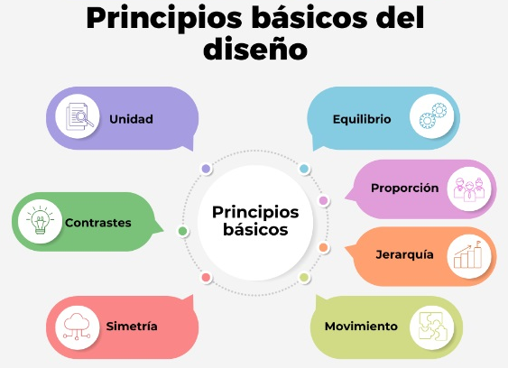
-
Unidad: Elementos relacionados que crean un todo armonioso.
-
Equilibrio: Distribución visual para dar estabilidad.
-
Contraste: Diferencias visuales (color, letra) para resaltar elementos.
-
Jerarquía: Organización para guiar la mirada según la importancia.
-
Proporción: Relación adecuada entre los tamaños de cada parte.
-
Simetría: Equilibrio mediante formas y líneas simétricas.
-
Movimiento: Sensación de dirección y flujo visual.
3.1 - Esquema de color
3.1.1 - Rueda cromática
Para realizar una presentación amigable, deberemos definir un esquema de color coherente con el tema y la audiencia usando la rueda cromática de Johann Wolfgang.

En esa rueda, los colores tienen tres niveles de parentesco:
-
Colores primarios:

Son los colores puros, no se pueden crear mezclando otros.- En la teoría clásica: Rojo, Amarillo y Azul.
- En el mundo real (imprentas y pintura): Cian, Magenta y Amarillo.
-
Colores secundarios:

Nacen cuando se mezclan dos primarios en partes iguales.- Naranja: Amarillo + Rojo.
- Verde: Azul + Amarillo.
- Violeta: Azul + Rojo.
-
Colores terciarios:

Son los colores más detallados. Aparecen cuando se mezclan un primario con su vecino secundario.- Ejemplo: Amarillo (primario) con verde (secundario) = Amarillo-Verdoso.
3.1.2 - Paleta de colores
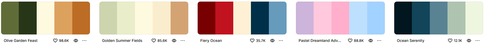
¿Qué es una paleta de colores?
- Una paleta de colores es un conjunto específico de colores eligido para un proyecto.
- Generalmente, una paleta de colores lleva entre de 3 y 5 tonos, que ayudan a crear una identidad visual.
- Esos tonos se generan usando la rueda cromática y siguiendo ciertas reglas de combinación entre ellos.
Reglas de combinación para crear una paleta de colores
A continuación, las 7 reglas más comunes de combinación de colores:
1. Relación Complementaria (Impacto):
Elegir colores que están justo enfrente en la rueda (por ejemplo: verde y rojo). Se usa para resaltar elementos importantes porque generan el máximo contraste.
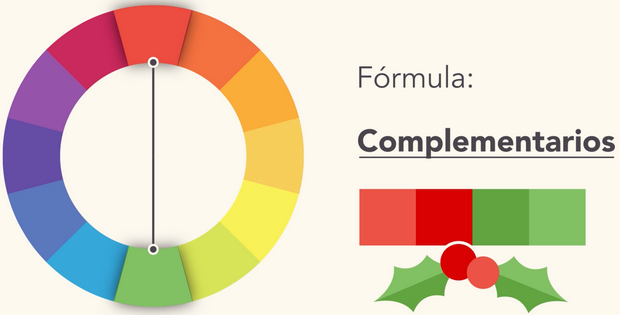
2. Relación complementaria dividida (Contraste suave):
Elegir un color base y los dos colores terciarios adyacentes a su complementario.
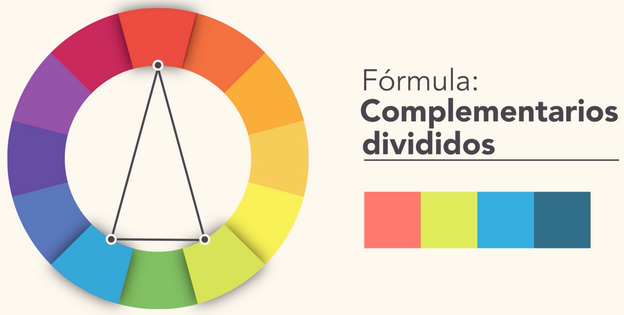
3. Relación Monocromática (Elegancia):
Elegir un solo color de la rueda y usar diferentes tonos o claridades de ese mismo color. Es la opción más segura y profesional.
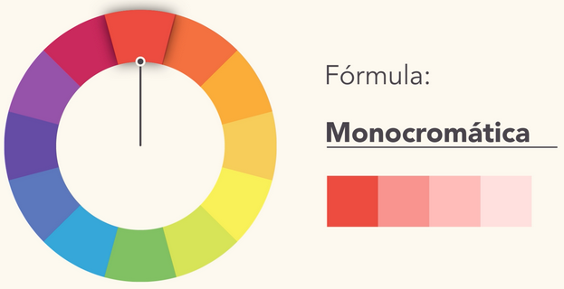
4. Relación Análoga (Armonía):
Elegir colores que están uno al lado del otro en la rueda (por ejemplo: azul, azul-verdoso, verde y verde amarillo). Transmiten calma y fluidez.
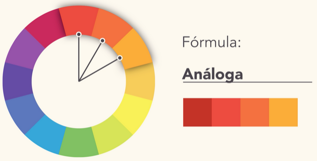
5. Relación Triádica (Equilibrio): Elegir tres colores que están equidistantes en la rueda (por ejemplo: naranja, verde y violeta). Ofrecen un contraste vibrante pero equilibrado.
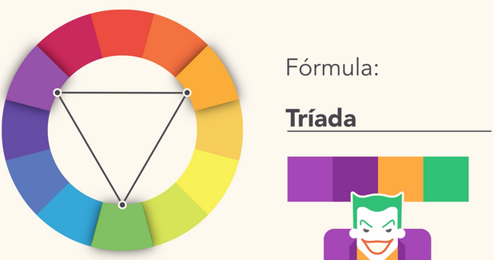
6. Relación Tetrádica (Variedad): Elegir dos pares de colores complementarios. Proporcionan una paleta rica y diversa, pero hay que usarlos con cuidado para evitar saturación visual.
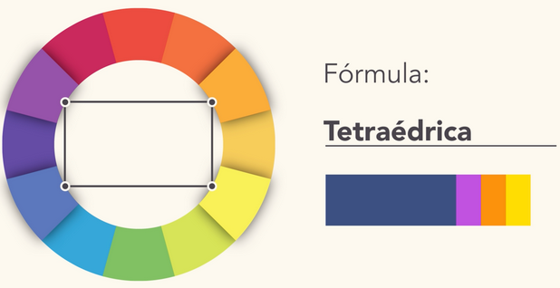
7. Relación Cuadrada (Diversidad equilibrada): Elegir cuatro colores equidistantes en la rueda. Proporcionan una paleta equilibrada y diversa, ideal para diseños dinámicos.

Es importante probar la paleta en diferentes contextos (fondo claro, oscuro, impresiones) para asegurarse de que funciona bien en todas las situaciones.
3.1.3 - Generadores de paletas de colores
- colors.co
- Microsoft Office dentro de su suite ofimática también incluye un generador de paletas de colores.
- LibreOffice no incluye un generador de paletas, pero existen extensiones que se pueden instalar para añadir esa funcionalidad.
3.1.4 - Colores a elegir
Los colores que elijamos para una presentación dependerán del impacto que queramos ejercer sobre la audiencia:
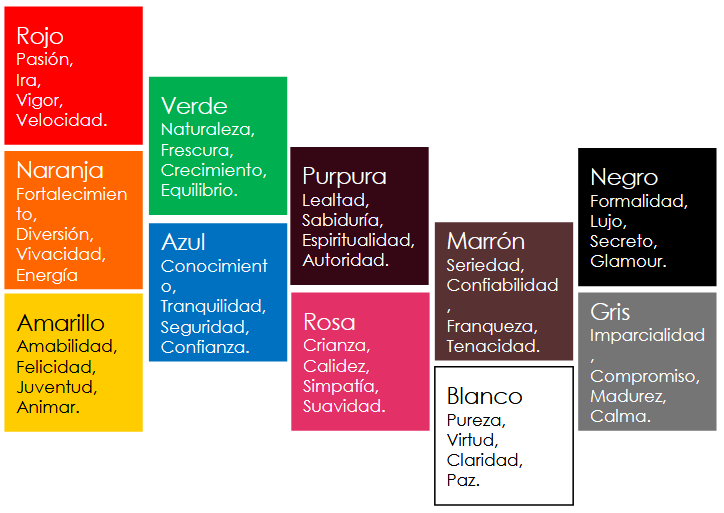
- Colores cálidos (rojo, naranja, amarillo): Transmiten energía, entusiasmo y urgencia. Son ideales para presentaciones motivacionales o de ventas.
- Colores fríos (azul, verde, morado): Transmiten calma, confianza y profesionalismo. Son adecuados para presentaciones corporativas o educativas.
- Colores neutros (blanco): Transmiten simplicidad, limpieza y modernidad. Son versátiles y se pueden combinar con cualquier paleta.
3.2 - Tipografía y legibilidad
También eligiremos fuentes simples y profesionales, manteniendo la consistencia en todas las diapositivas.
Para lograrlo, debemos seguir tres reglas fundamentales:
1. Estilo:
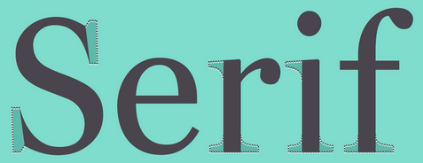
- Debe ser simple y profesional. Existen muchas fuentes, pero lo ideal es usar familias "Sans Serif" (sin remates o "patitas"). Son más limpias y descansadas para la vista en pantallas.
- Recomendadas: Arial, Helvetica, Calibri o Roboto.
- A evitar: Fuentes muy decorativas o informales (como Comic Sans o cursivas extremas).
2. Tamaño:
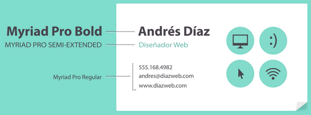
- El texto debe ser legible incluso para quien esté en la última fila.
- Títulos: Entre 36 y 44 puntos.
- Cuerpo de texto: Mínimo 24 puntos.
- Consejo: Si no cabe el texto, es señal de que hay demasiada información en la diapositiva.
3. Consistencia Visual:
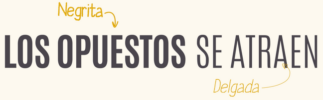
- Para una buena aceptación de una presentación, hay que limitar el uso de fuentes.
- Máximo 2 tipos de letra diferentes (una para títulos y otra para contenido).
- Mantener los mismos tamaños y colores en todas las diapositivas.
- Usar la jerarquía tipográfica. Se puede usar negritas para resaltar palabras clave, pero hay que evitar escribir párrafos enteros en mayúsculas.
3.3 - Organización de los contenidos
- Organizaremos los contenidos de forma equilibrada y alineada, evitando el desorden o el exceso de elementos.
- Por ejemplo, usaremos un espaciado consistente que dé aire a la diapositiva, asegurando que no se vea saturada ni demasiado vacía.
3.4 - Tarea RA7-CEc
Tarea RA7-CEc
Crear una presentación en blanco y guardarla con el formato: tarea RA7-CEc nombre apellidos. Realizar una presentación de 6 diapositivas siguiendo las indicaciones que se dan a continuación:
-
Generar una paleta de colores
- La paleta de colores deberá transmitar frescura o confianza.
- Añadir esa paleta de colores a Colores personalizados de LibreOffice Impress.
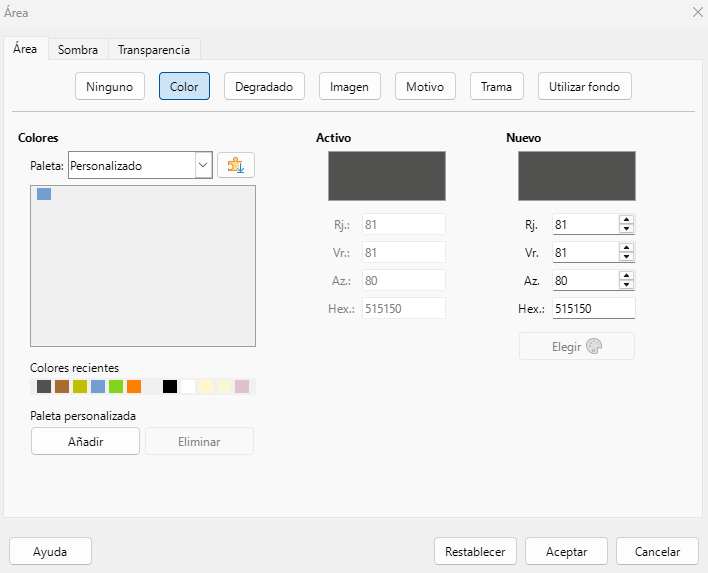
-
Diapositiva 1 - Portada
- Usar el patrón de diapositivas creado en la tarea RA7-CEb (Portada).
- Título: "Diseño de presentaciones atractivas".
- Subtítulo: "Nombre Apellidos".
- Insertar una imagen de la paleta de colores elegida.
-
Diapositiva 2 - Introducción
- Usar el patrón de diapositivas creado en la tarea RA7-CEb (Castellón).
- Título: "Introducción".
- Contenido: Breve descripción de la importancia del diseño en presentaciones.
- Acordaros de usar la fuente, tamaño y espaciado adecuado.
-
Diapositiva 3 - Principios básicos de diseño
- Usar el patrón de diapositivas creado en la tarea RA7-CEb (Valencia).
- Título: "Principios básicos de diseño".
- Contenido: Lista de los 7 principios básicos de diseño (Unidad, Equilibrio, Contraste, Jerarquía, Proporción, Simetría, Movimiento).
-
Diapositiva 4 - Esquema de color
- Usar el patrón de diapositivas creado en la tarea RA7-CEb (Alicante).
- Título: "Esquema de color".
- Contenido: Explicación breve sobre la importancia de elegir una paleta de colores adecuada.
-
Diapositiva 5 - Tipografía y legibilidad
- Usar el patrón de diapositivas creado en la tarea RA7-CEb (Castellón).
- Título: "Tipografía y legibilidad".
- Contenido: Consejos sobre la elección de fuentes, tamaños y consistencia visual.
-
Diapositiva 6 - Organización de los contenidos
- Usar el patrón de diapositivas creado en la tarea RA7-CEb (Valencia).
- Título: "Organización de los contenidos".
- Contenido: Importancia de la organización visual y el espaciado adecuado.
-
Revisión final
- Asegurarse de que todas las diapositivas siguen un diseño coherente.
- Verificar la legibilidad del texto y la armonía de los colores.
- Añadir transiciones suaves entre diapositivas para mejorar la fluidez de la presentación.
Entrega de la tarea
Subir la tarea a AULES en el apartado correspondiente.
El archivo a subir deberá ser de tipo .odp (formato predeterminado de LibreOffice Impress).
No se aceptará ningún otro formato de archivo.
4 - Creación de una presentación - Tarea RA7-CEe
Explicación de la tarea
- Sois los encargados de presentar las nuevas pantallas Newline ELARA Pro rescientemente estrenadas en los centros educativos de la Comunidad Valenciana.
- Teneís a vuestra disposición toda la información técnica y comercial necesaria para elaborar una presentación atractiva y profesional que destaque las características y beneficios de estas pantallas interactivas. Podeís descargar los archivos necesarios desde este enlace.
- Disponeís de total libertad para crear una presentación atractiva y profesional que destaque las características y beneficios de estas pantallas interactivas.
Instrucciones
- La presentación deberá constar de un mínimo de 8 diapositivas.
- Se deberá utilizar una plantilla o patrón de diapositivas adecuado para el tema.
- Se deberán incluir imágenes relevantes y de alta calidad relacionadas con las pantallas Newline ELARA Pro.
- Se deberá aplicar un esquema de colores coherente y profesional.
- Se deberá utilizar una tipografía legible y profesional.
- Se deberán incluir transiciones suaves entre diapositivas.
contenidos mínimos
Diapositiva 1 - Portada
- Título: "Newline ELARA Pro".
- Subtítulo: "Presentación de pantallas interactivas".
- Insertar una imagen representativa de las pantallas Newline ELARA Pro.
- Poner vuestro nombre en la parte inferior de la diapositiva.
Diapositiva 2 - Introducción
- Título: "Guía rápida".
- Contenidos:
- Gestió del panell
- Pissarra
- Aplicacions Android
- Font externa
Diapositiva 3 - Gestió del panell
- Título: "Gestió del panell".
- Contenidos:
- Connexions i ports
Diapositiva 4 - Pissarra
- Título: "Pissarra".
- Contenidos:
- Barra d'eines
Diapositiva 5 - Pissarra
- Título: "Pissarra".
- Contenidos:
- Ús habitual de la pissarra
Diapositiva 6 - Aplicacions Android
- Título: "Aplicacions Android".
- Contenidos:
- Aplicacions instalades
Diapositiva 7 - Aplicacions Android
- Título: "Aplicacions Android".
- Contenidos:
- Afegir/eliminar aplicacions
Diapositiva 8 - Despedida
- Título: "Gràcies per la vostra atenció".
- Contenidos:
- Espai per a preguntes i respostes.
Entrega de la tarea
Subir la tarea a AULES en el apartado correspondiente.
El archivo a subir deberá ser de tipo .odp (formato predeterminado de LibreOffice Impress).
No se aceptará ningún otro formato de archivo.
| Licencia Creative Commons: | |
|---|---|
 |
Reconocimiento-NoComercial-CompartirIgual CC BY-NC-SA: No se permite un uso comercial de la obra original ni de las posibles obras derivadas, la distribución de la cuales se debe hace con una licencia igual a la que regula la obra original. |